↓
Scroll to view full project
Brand Strategy / Outdoor Media
沃尔沃 XC90
户外投放方案
2024
- Category
- Project Design
- Role
- Strategy / Visual / Presentation
- Format
- 26 Slides
围绕沃尔沃 XC90 目标人群、户外媒介场景与城市投放策略完成方案梳理，并以完整 Project 呈现项目逻辑和视觉表达。
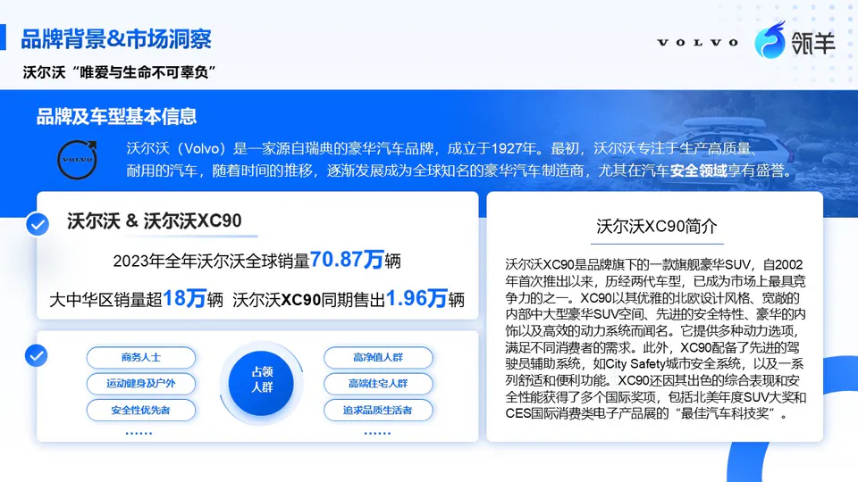
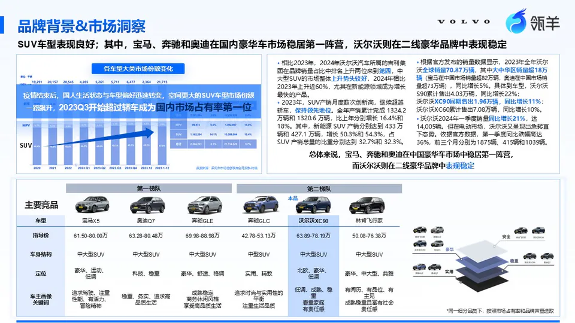
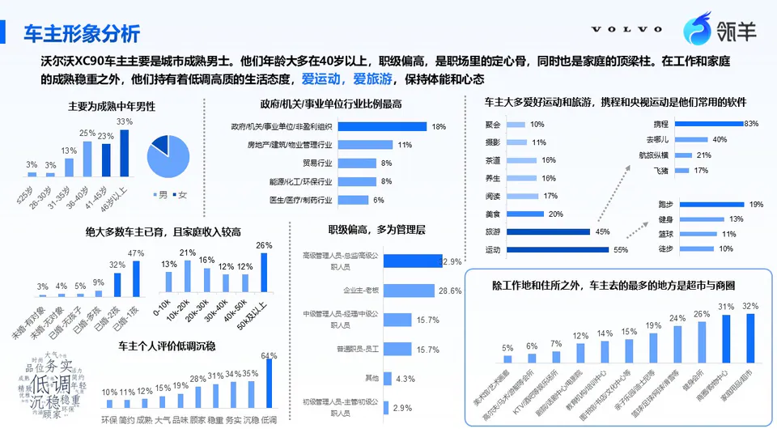
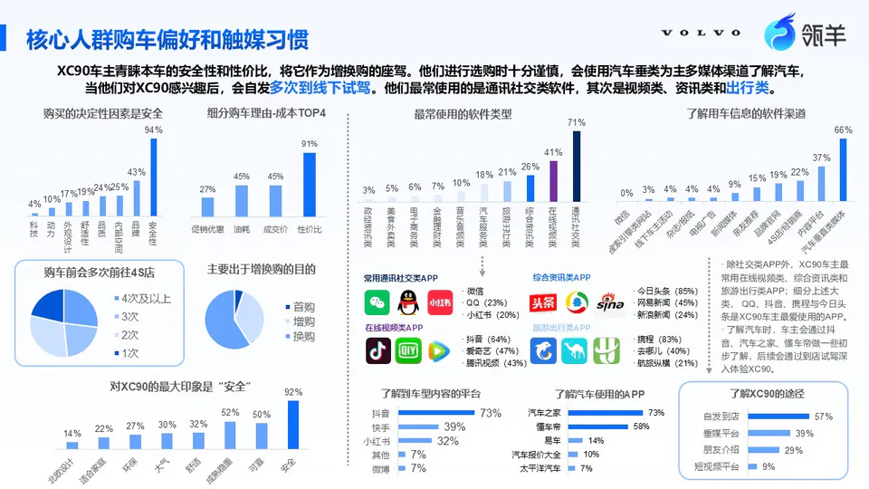
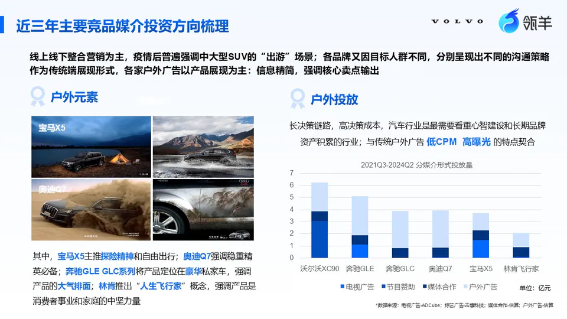
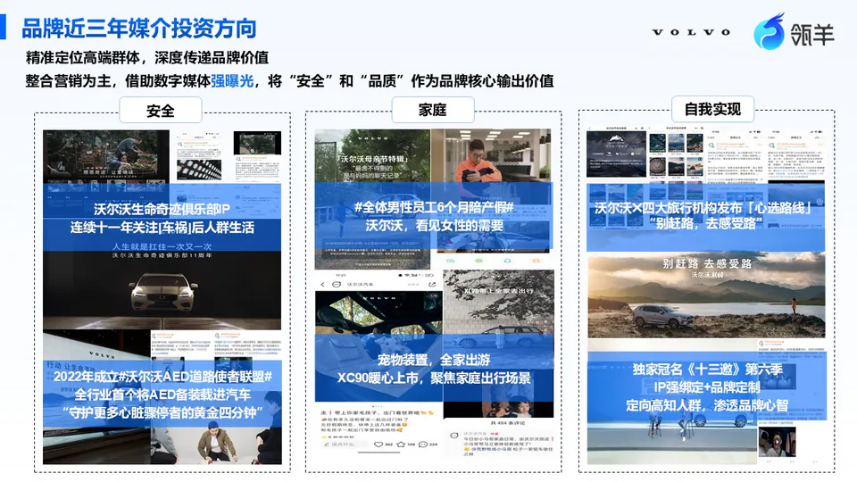
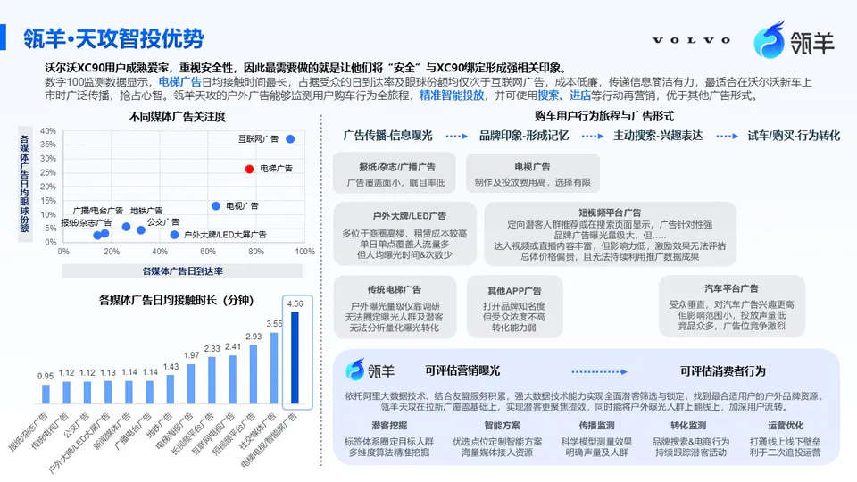
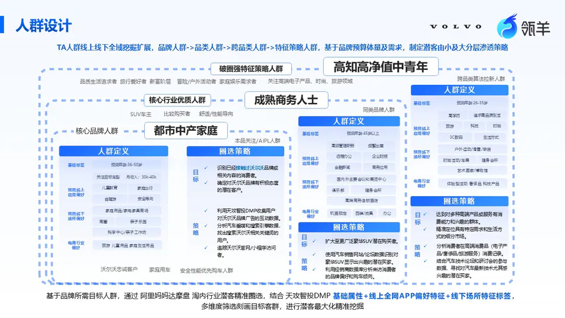
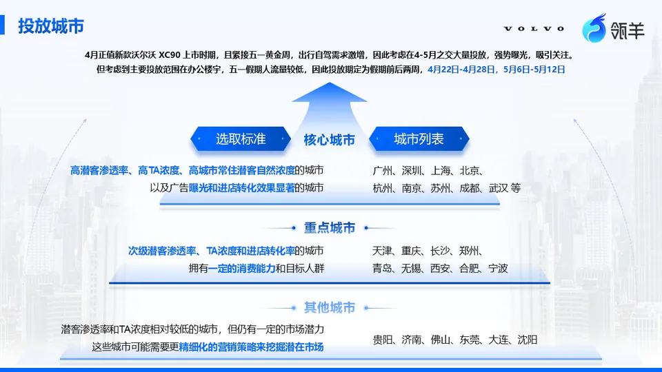
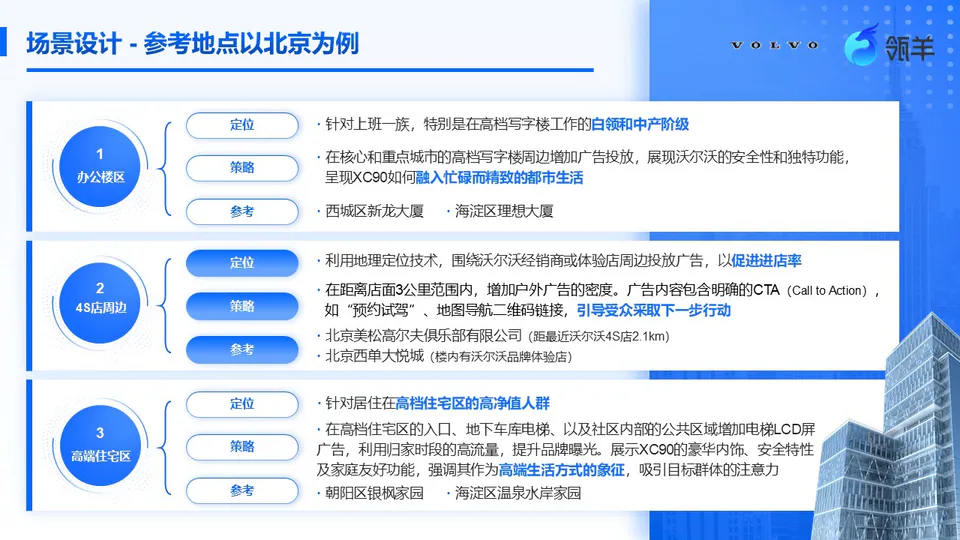
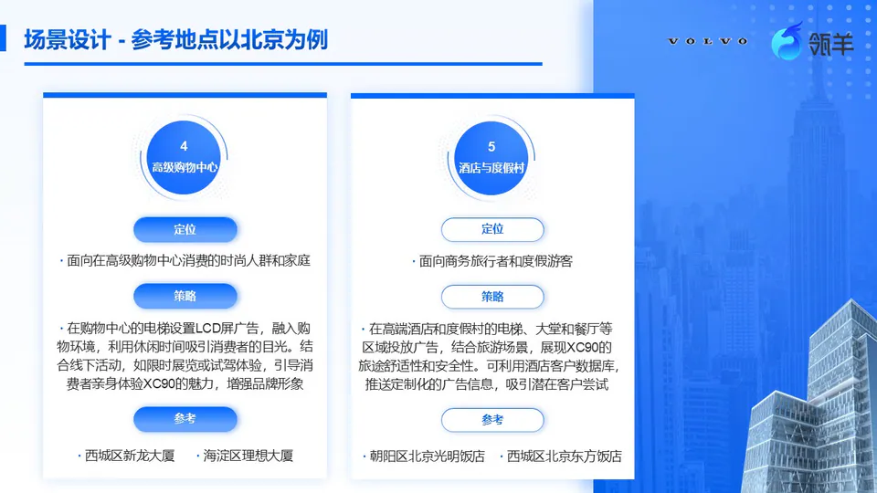
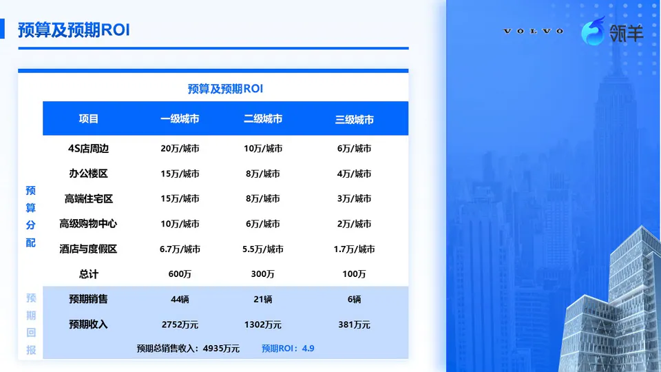
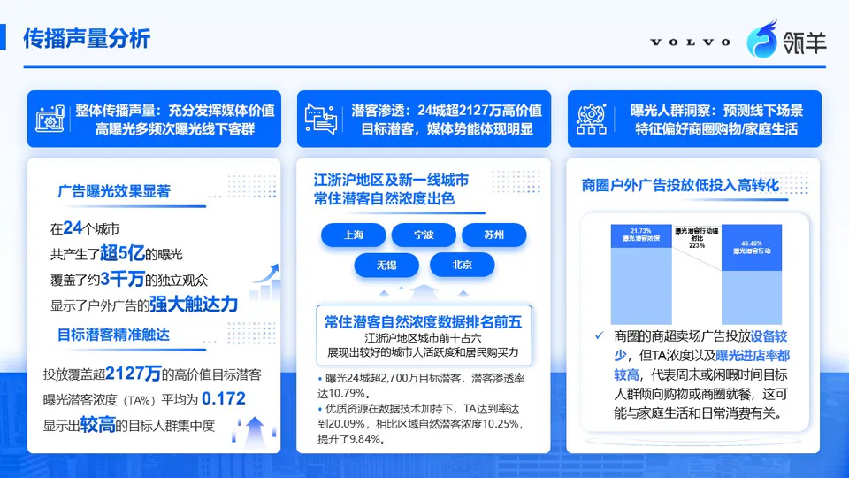
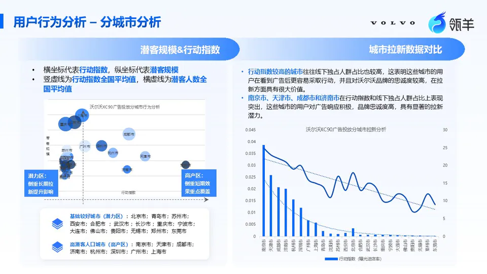
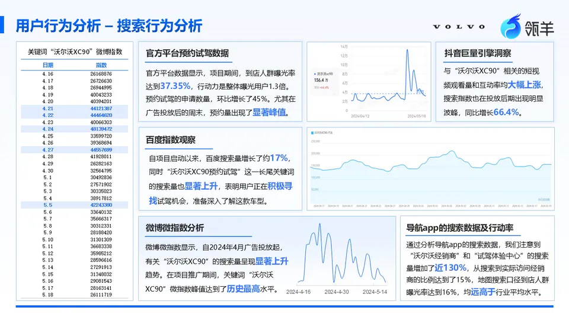
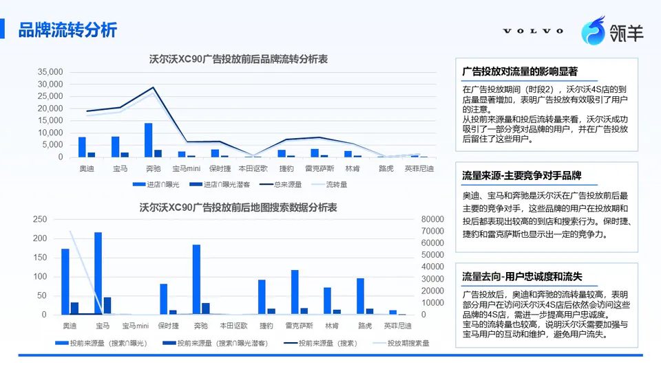
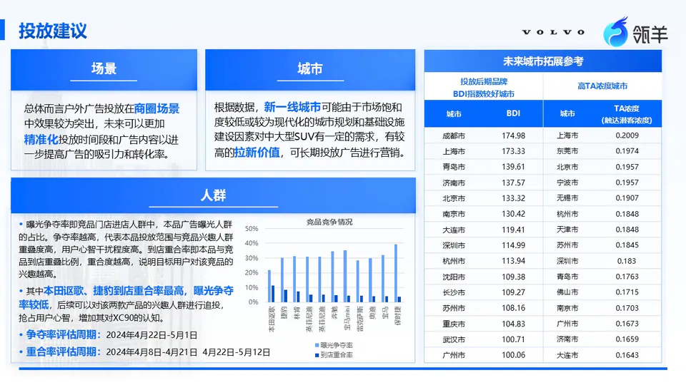
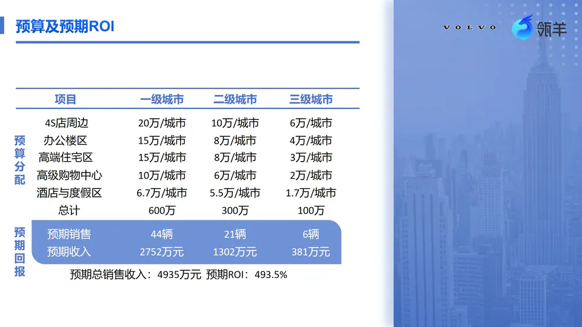
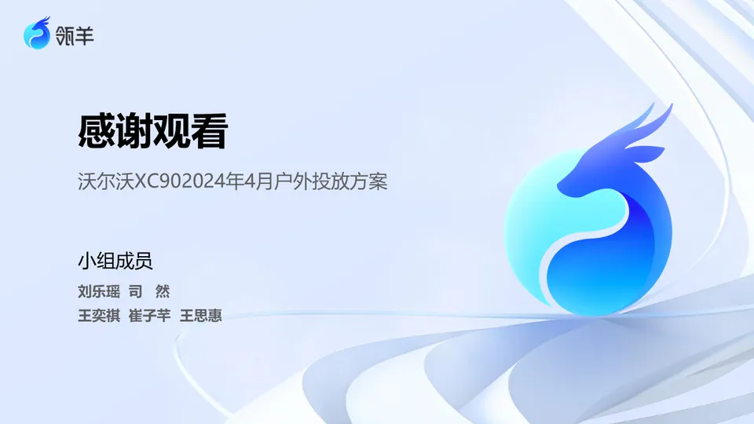